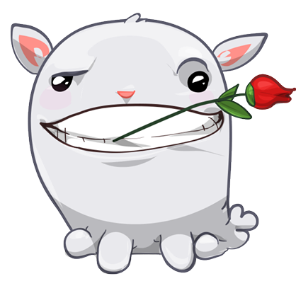
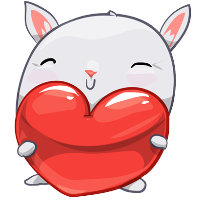
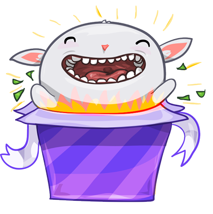

Nie bedzie jakieś sekiro ważniejsze od ciebie. Jesteś naprawde cudowna oraz jesteś osobą na której mi bardzo zależy, dlatego też chcialem się spytać czy zostaniesz moją walentynką 🥹💝

jeśli byś miala jeszcze jakieś wątpliwości to pozwól że je rozwieje 🥰. Oto dlaczego powinnaś się zgodzić:
1. Jesteś wyjątkowa, cudowna i kochana oraz osobą z którą mam naprawde super wspomnienia i chce sprawić zeby to było też tak samo wyjątkowe i miłe do wspominania dlatego też ja ze wszystkich sił postaram sie taki być jak ty a nawet jeszcze lepszy 😘
2. Sprawie żeby ten dzień dla ciebie był naprawde wyjątkowy 💖
3. Bardzo mi zależy dlatego też bardzo będę się starał żebyś była szczęśliwa i ani na chwilę smutna 🥺
Czy przejmujesz zaproszenie i chciałabyś zostać moją walentynką? 🥺💝

TAK CIĘ UWIELBIAM I JESTEŚ NAPRAWDĘ SUPER OSOBĄ 🥰
Naprawdę jest mi niesamowicie miło i tak się cieszę żę się zgodziłaś. Naprawdę będę się bardzo starał żeby ten dzień był super 🌹💐